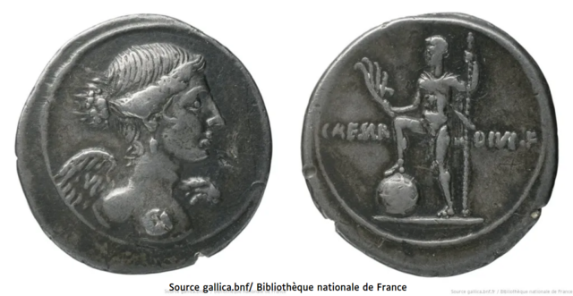
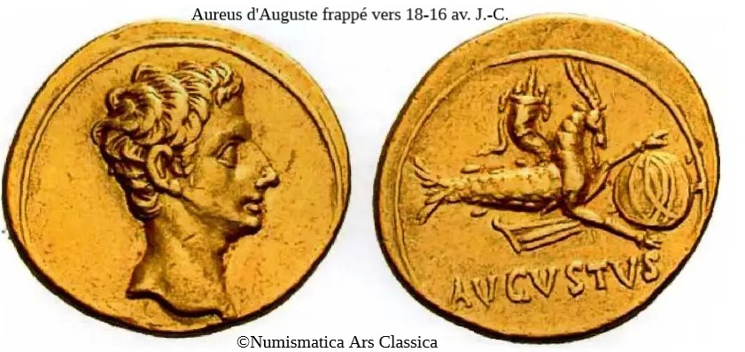

La symbolique des cercles sur la sphère : vers une interprétation politique
Dans le Timaeus, c'est le pourtour+ (*)l'ambitus de l'âme du monde, principe immortel, qui permet de lier l'essence de l'esprit divin à son corps : c'est un ensemble de cercles que les dieux+ engendrés par le dieu+ premier agrègent à chaque corps particulier qu'ils génèrent, en tant qu'image dupliquée du monde idéal duquel ils sont issus eux-mêmes. Les cercles témoignent de la perfection du modèle, ce qu'ils entourent est la limite du monde de l'intelligible - les cercles de la sphère dans la Mosaïque de L'Académie de Platon le suggèrent - il ne peut s'agir de la représentation du globe terrestre, ni de celle du monde sensible.
A l'époque de l'écriture du Timée, la réflexion sur la perfection qu'illustre la sphère+ est associée à celle sur le meilleur Etat (*)la Res Publica possible : Cicéron a vécu depuis 50 av. J.C. l'ascension de Jules César, et malgré ses rapports relativement cordiaux avec lui, il la désapprouve parce qu'elle met en danger la République romaine et ses principes fondateurs. Il refréquente le Timée en 45, un an avant l'assassinat de César, pour signifier à la classe politique romaine combien la volonté de puissance de César est contraire aux principes du monde intelligible et de la sphère+ qui les représente.
Auguste, dès le début de l'Empire, va signifier aux citoyens romains de tout l'Empire, le changement politique de son régime en se montrant dominant la sphère+ de Cicéron.
Si l'ambitus, présent sur le revers des premiers deniers d'Octave, est à comprendre comme l'expression homologique d'une représentation du monde de l'intelligible, donc de la République, sa position sur les pièces de monnaie le montre en infériorité par rapport à la représentation de l'Empereur.
Cicéron reprend dans ses Philippiques (-44,-43) contre Marc Antoine les mêmes arguments. Pour lui, s'opposer à la République, c'est s'opposer au dieu+ créateur de l'univers :
Au nom des dieux immortels, pères conscrits, saisissez l’occasion, et souvenez-vous que vous êtes les chefs du conseil le plus auguste de l’univers.[...] Vous savez quelle est l’insolence d’Antoine ; vous connaissez ses amis ; vous connaissez toute sa maison. Être l’esclave d’hommes débauchés, dissolus, impurs, impudiques, abrutis par le jeu et l’ivresse, c’est le comble de la misère joint au comble de la honte. Que si la république (puissent les dieux détourner ce présage !) est arrivée à son dernier jour, eh bien ! à l’exemple de ces gladiateurs qui savent tomber avec honneur, nous, les premiers de l’univers, nous, les maîtres de toutes les nations, succombons avec dignité plutôt que de servir avec ignominie. Rien de plus cruel que la honte, rien de plus odieux que la servitude. Nous sommes nés pour la gloire et pour la liberté ; ou gardons-les, ou mourons avec honneur.1
Sur les pièces de monnaie ultérieures, le pourtour+ de la sphère, marqué par ses cercles, va disparaître, traduisant le passage du monde intelligible au monde sensible, sujet aux imperfections liées aux actions des Hommes, selon le Timée, en notant bien que ce globe+ ne représente pas le globe terrestre.
La mosaïque bichrome de Sarsina (en Émilie-Romagne), datant du IIes. ap. J.C. confirme cette évolution de la représentation du monde+ : dans la même scénographie que
1 Extrait de la 3èmePhilippique (XIV) : Hanc igitur occasionem oblatam tenete, per deos immortales, patres conscripti, et amplissimi orbis terrae consilii principes uos esse aliquando recordamini! Signum date populo Romano consilium uestrum non deesse rei publicae, quoniam ille uirtutem suam non defuturam esse profitetur. Nihil est, quod moneam uos. Nemo est tam stultus, qui non intellegat, si indormierimus huic tempori, non modo crudelem superbamque dominationem nobis, sed ignominiosam etiam et flagitiosam ferendam esse. Nostis insolentiam Antoni, nostis amicos, nostis totam domum. Libidinosis, petulantibus, impuris, impudicis, aleatoribus , ebriis seruire, ea summa miseria est summo dedecore coniuncta. Quodsi iam, quod di omen auertant! fatum extremum rei publicae uenit, quod gladiatores nobiles faciunt, ut honeste decumbant, faciamus nos principes orbis terrarum gentiumque omnium, ut cum dignitate potius cadamus quam cum ignominia seruiamus.